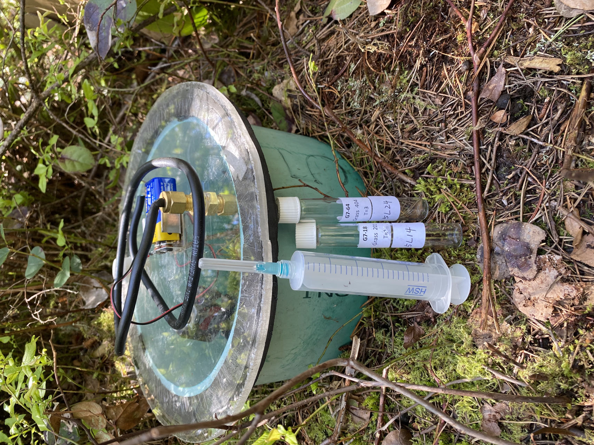

Research
Here is a list of projects I’ve done or I’m working on.
Research & Field Work
My primary research has been concentrated on Burns Bog, a raised domed peat bog situated in Metro Vancouver. The bog is equipped with two eddy covariance (EC) stations (Ameriflux ID: CA-DBB and CA-DB2), a mobile flux tower and multiple chamber sites. In my role as an undergraduate research assistant, I conducted research in quantifying greenhouse gas (GHG) fluxes within zones of the bog that experienced fire events in 2005 and 2016, as well as in an unburned zone. Theses measurements were executed employing static chamber - gas chromatography method.
For my master’s thesis, I am investigating the impacts of seedlings removal on soil CO2 and CH4 fluxes within the zone of the bog that was burned in 2016, utilizing the static chamber-portable analyzer technique. Concurrently, I have a strong interest in the modeling of EC data. This interest inspired me to undertake a project aimed at exploring the influence of heatwaves on CO2 and CH4 fluxes by employing causality analysis on flux data obtained from the EC system.
Master’s Thesis
Investigating Impacts of Seedling Removal on Soil Respiration (CO2 and CH4) in a Restored Bog Ecosystem
On July 3, 2016, a fire broke out in the north-western portion of the Burns Bog at the base of one of the Corus Entertainment radio towers, which consumed up to 78 hectares of the bog area.The fire resulted in the incineration of up to 50 cm of the surface peat, the area was subjected to massive seed releases from decades of accumulation of lodgepole pinecones.The post-fire vegetation communities became tree-dominated, mainly comprising native and non-native tree species. This in turn increases soil carbon emissions to the atmosphere and can decrease the carbon storage capacity of peatlands.
Appropriate postfire management (seedling removal) is hypothesized to protect the carbon sequestration potential of peatlands by preventing their transition to a forest ecosystem. This study aims to investigate the impacts of seedling removal on soil and ground-level respiration (both CO2 and CH4) within a burned section of the Bog. The study focuses on two distinct study areas (seedling and seedling-removal areas) located within the 2016 burned zone of the bog. Within each study area, three distinct ecosystem types (Pine Sphagnum Low Shrub/Tall Shrub/Woodland) have been identified. Chamber collars were installed at each of the study sites.
This research project is planned to span a full year, from April 2023 to March 2024. The frequency of field visits varies between the growing (~3 times a month) and non-growing seasons (once per month). This study incorporates the manual measurements (soil respiration fluxes by using LI-COR 7810 portable gas analyzer with the smart chamber and environmental variables including peat volumetric water content, peat temperature and water table depths) and continuous measurements (water table depths, volumetric water content and peat temperature).
The gathered fluxes data are analyzed using the SoilFluxPro software, developed by LI-COR. A mixed-effects model is employed to investigate the impacts of seedling removal on ecosystem respiration and methane fluxes. Year-round ecosystem respiration and methane fluxes will be modeled, utilizing both manual measurements of fluxes and continuous measurements of environmental variables to provide comprehensive insights into ecological responses and changes.


Graduate Research Work
Impacts of Heatwaves on Greenhouse Gas Fluxes (CO2 and CH4) in a Restored Bog Ecosystem: Nonlinearity, Asynchrony and Causality
Increased global temperatures have led to a higher frequency and intensity of worldwide extreme weather occurrences. Based on the WMO’s survey on extreme events frequency in 2022, heatwaves were the most commonly occurring event relative to others (117/477). However, our knowledge of the impacts of these extreme temperature events on ecosystem functions is still limited.
By integrating the definitions of heatwaves from both the World Meteorological Organization (WMO) and De Boeck et al. (2010), we identified seven periods of heatwaves since the construction of the Burns Bog EC flux tower in 2016. We have conducted preliminary statistical analyses to understand the alterations in magnitude and patterns of carbon (FC) and methane fluxes (FCH4) before, during, and after the heatwave, and to identify the biophysical controls influencing FC and FCH4 during these phases. Presently, we’re researching the use of information theory (mutual information and transfer entropy) to investigate dominant controls and causal interactions between the fluxes and their primary drivers under heatwave events.
Honours Thesis
Postfire greenhouse gas exchange of three vegetation types in a restored bog ecosystem
Under a warming climate, degraded peatlands are facing increased frequency and extent of peat fires, which can turn peatlands from net carbon (C) sinks to net C sources. The Burns Bog experienced two recent serious wildfires, one in 2005 and another in 2016.
In this study, we used static chambers - gas chromatography to measure GHG fluxes at three dominant vegetation types in the 2005 and 2016 fire zones and an unburned area. Our goals were (a) quantify postfire GHG fluxes of three representative vegetation types in three zones experiencing different fire events and (b) investigate the effects of fire and time since fire on GHG exchanges in BBECA over 8 months (from October 2021 to May 2022).
Main findings include 1) Among all ecosystem types studied, sites characterized as Pine Sphagnum Woodland, particularly those with a higher density of trees, were identified as stronger sources of CO2 and weaker sources of CH4 and 2) N2O fluxes were found to be negligible across all investigated sites in the bog.

References
De Boeck, H. J., Dreesen, F. E., Janssens, I. A., & Nijs, I. (2010). Climatic characteristics of heat waves and their simulation in plant experiments: HEAT WAVE CHARACTERISTICS AND SIMULATION. Global Change Biology, 16(7), 1992–2000. https://doi.org/10.1111/j.1365-2486.2009.02049.x
WMO 2003 WMO Statement on the Status of the Global Climate in 2003 (Geneva, Switzerland: WMO publications)